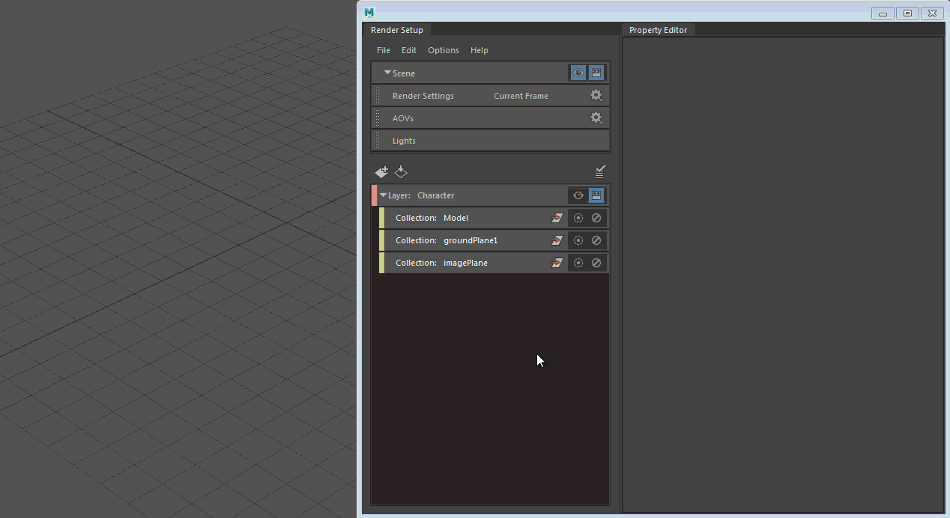

单击“渲染设定”(Render Setup)编辑器顶部的“场景”(Scene) 图标以切换到场景层，然后双击“渲染设置”(Render Settings)选项卡以打开“渲染设置”(Render Settings)窗口。这将为场景打开“渲染设置”(Render Settings)。
此外，还会显示待渲染帧的范围。这可能会指示当前帧或帧 1-10（例如，如果已设置“开始帧”(Start Frame)和“结束帧”(End Frame)）。
为渲染层创建渲染设置覆盖
-
在场景层（或任何渲染层）中双击“渲染设置”(Render Settings)选项卡以打开“渲染设置”(Render Settings)窗口。
- 在要创建覆盖的层上单击 以切换到该层。
“渲染设置”(Render Settings)窗口现在会更新以显示可见层的“渲染设置”(Render Settings)。
-
右键单击您要在“渲染设置”(Render Settings)窗口中覆盖的属性，然后选择“为可见层创建绝对覆盖”(Create Absolute Override for Visible Layer)或“为可见层创建相对覆盖”(Create Relative Override for Visible Layer)。
在“渲染设定”(Render Setup)编辑器中，系统会为您的可见层创建“渲染设置”(Render Settings)集合，以及相应的覆盖。
- 选择该覆盖并调整它在“特性编辑器”(Property Editor)中的值。

创建覆盖之后，层可见性图标  周围可能会显示红色边界；单击该图标可在渲染前刷新层，从而使覆盖反映在渲染中。
周围可能会显示红色边界；单击该图标可在渲染前刷新层，从而使覆盖反映在渲染中。
选择任何“渲染设置”(Render Settings)覆盖，“特性编辑器”(Property Editor)将指示它所应用到的节点；例如：应用于 defaultResolution 节点”(Applied to defaultResolution node)。此指示器会显示在自 Maya 2017 Update 3 以来创建的所有“渲染设置”(Render Settings)覆盖上。
如果在不同节点上的两个或多个同名属性上创建覆盖，该指示器可能会有帮助。
例如，在本例中，有两个名为 width 的覆盖。为方便识别，对于前者，“特性编辑器”(Property Editor)指示“应用于 defaultResolution 节点”(Applied to defaultResolution node)：
对于后者，指示“应用于 defaultArnoldFilter 节点”(Applied to defaultArnoldFilter node)。
显示每个渲染层的渲染设置
要打开任一层（包括场景层）的“渲染设置”(Render Settings)，请单击该层中的 ，然后双击其“渲染设置”(Render Settings)集合。
如果该层尚不存在“渲染设置”(Render Settings)集合，您可以使用鼠标中键将“渲染设置”(Render Settings)选项卡从“渲染设定”(Render Setup)编辑器的顶部拖放到您的渲染层。
查看特定层（包括场景层）的“渲染设置”(Render Settings)时，会显示相应层的“渲染设置”(Render Settings)集合（带有灰色边界）。
您可以仅显示可见层的“渲染设置”(Render Settings)窗口。如果在“渲染设置”(Render Settings)窗口打开时切换到另一个层（通过单击该层上的 ），则“渲染设置”(Render Settings)窗口将自动更新，以反映可见层的设置。
反之亦然。如果使用“渲染设置”(Render Settings)窗口中的“渲染层”(Render Layer)下拉列表来显示另一层的“渲染设置”(Render Settings)，则该层将自动设置为可见。
创建渲染设置子集合
创建“渲染设置”(Render Settings)子集合以对覆盖进行排序，并创建多个“渲染设置”(Render Settings)组合。
右键单击层的“渲染设置”(Render Settings)集合，并选择“创建渲染设置集合”(Create Render Settings Collection)。然后，您可以将“渲染设置”(Render Settings)覆盖拖放或复制粘贴到此子集合。
如果该层尚不存在“渲染设置”(Render Settings)集合，您可以使用鼠标中键将“渲染设置”(Render Settings)选项卡从“渲染设定”(Render Setup)编辑器的顶部拖放到您的渲染层。
此外，通过执行以下操作，您可以直接在子集合内创建“渲染设置”(Render Settings)覆盖：
- 在要创建覆盖的渲染层上单击 。
- 选择要向其添加覆盖的“渲染设置”(Render Settings)子集合。
- 右键单击“渲染设置”(Render Settings)窗口中的属性，然后选择“为可见层创建绝对覆盖”(Create Absolute Override for Visible Layer)或“为可见层创建相对覆盖”(Create Relative Override for Visible Layer)。
此功能的一个示例应用是创建“高”(High)、“中等”(Medium)、“低”(Low)这三种“渲染设置”(Render Settings)，并将其中一组设置（如“中等”(Medium)）转化为局部渲染覆盖。从而，将较低的采样值用于交互式测试渲染，将较高的采样值（全局“渲染设置”(Render Settings)）用于批渲染。